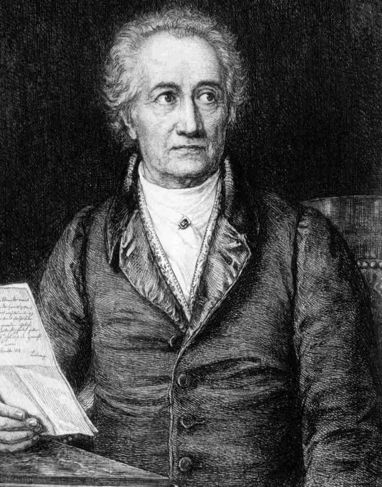
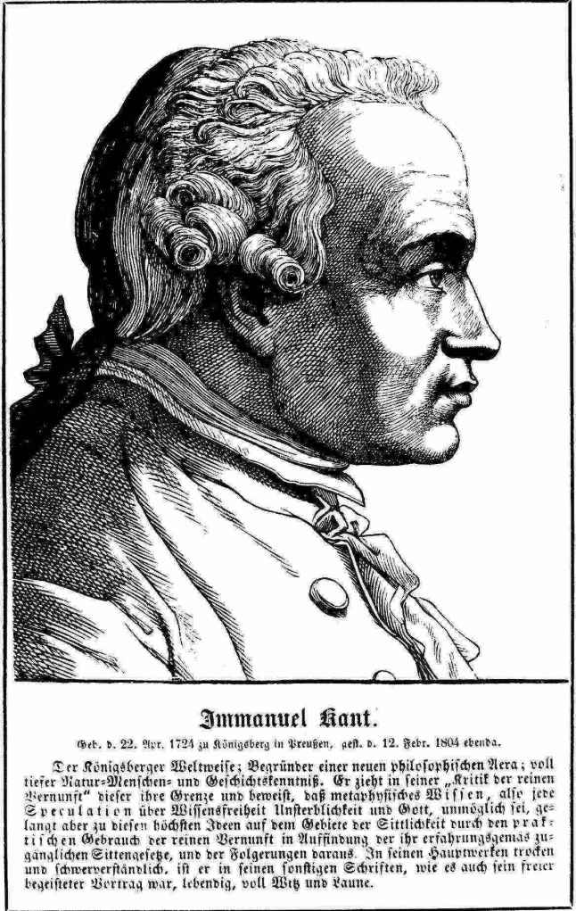
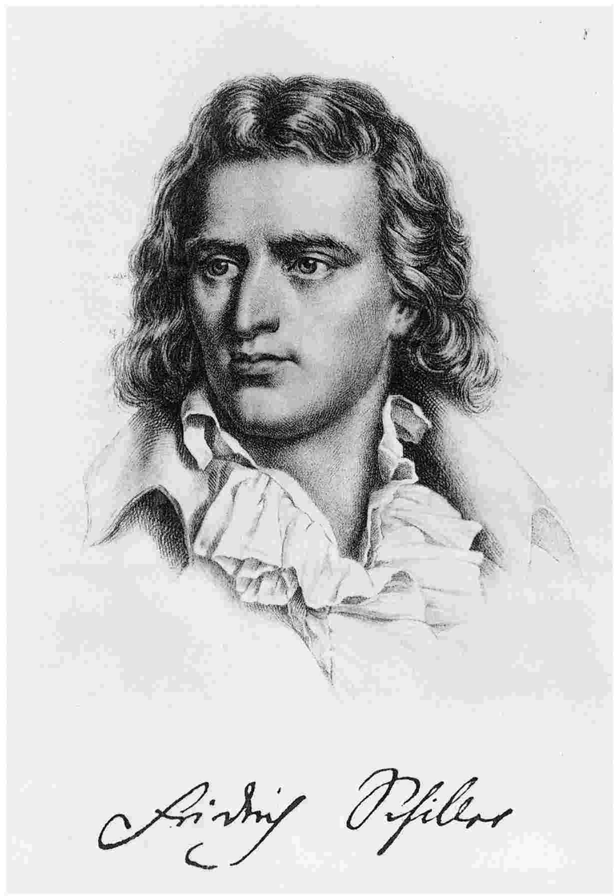

1770年，格奥尔格·威廉·弗里德里希·黑格尔出生于斯图加特。他的父亲是符腾堡公国宫廷中一个官职不大的文职人员，其他亲戚则是教师或路德会牧师。关于黑格尔的生平，没有什么异乎寻常的事情可讲，但他所处的时代在政治、文化和哲学上都很重要。
1789年攻占巴士底狱的消息传遍了欧洲。此时华兹华斯写道：
此时黑格尔年近19岁。后来他也称法国大革命是“灿烂的黎明”，并说“一切思想者都分享了这个时代的欢欣”。春天的一个周日清晨，满怀这种欢欣的黑格尔曾和几位同学到郊外种下一棵自由树，象征着大革命播下的希望种子。
黑格尔21岁时，法国大革命战争已经开始，不久革命军便侵入了德国。今天我们所说的德国，当时由300多个国家、公国和自由城市组成，作为奥地利皇帝弗朗西斯一世统治之下的神圣罗马帝国松散地联合在一起。拿破仑在乌尔姆和奥斯特利茨大败奥地利人，1806年又在耶拿的战斗中摧毁了第二强大的德意志国家普鲁士的军队，一举终结了这个千年帝国。黑格尔当时生活在耶拿。也许有人以为他始终同情战败的德意志国家，但他在耶拿被法国人占领后第二天写的一封信却只表露了对拿破仑的崇敬之情：“我看到皇帝——这个世界灵魂——骑马穿城而过，去检阅军队。看到这样一个人在这里集中成一点，坐在马背上，走向世界并且统治它，这的确是一种奇妙的感受。”
在拿破仑统治欧洲的整个时期，黑格尔始终保持着这种崇敬之情。而当拿破仑1814年战败时，黑格尔称之为一个悲剧，是平庸毁灭伟大天才的奇观。
1806到1814年的法国统治时期，德国发生了重大变革。在普鲁士，自由党人冯·施泰因被任命为国王首席顾问。上任后，他立即废除了农奴制，并重新组建政府。其继任者冯·哈登贝格则承诺在普鲁士建立代议制政体。但拿破仑战败后，这些希望都破灭了。普鲁士国王弗雷德里克·威廉三世对改革失去了兴趣。拖延数年之后，他于1823年建立了仅仅是临时性的“等级”（estates），这些等级只能提一些建议，而且完全受地主统治。不仅如此，1819年在卡尔斯巴德的一次会议上，所有德意志国家还一致同意审查报纸和期刊，并对宣扬革命思想的人采取镇压措施。
从文化角度来说，黑格尔生活在德国文学的黄金时代。他比歌德小20岁，比席勒小10岁，但这并不妨碍他欣赏他们的所有成熟作品。他是诗人荷尔德林的密友，与诺瓦利斯、赫尔德、施莱尔马赫、施莱格尔兄弟等德国浪漫主义运动的领导者也是同时代人。歌德和席勒对黑格尔产生了重大影响，黑格尔显然认同浪漫主义运动的一些想法，尽管他拒绝接受浪漫主义者的大部分主张。

图2 约翰·沃尔夫冈·冯·歌德（1749-1832）
不过，对黑格尔的发展影响最大的是当时德国哲学的状况。为了理解黑格尔本人思想的背景，我们需要从康德开始讲起，并简要概述康德之后的发展。
1781年，伊曼努尔·康德出版了《纯粹理性批判》。如今，这部著作被誉为古往今来最伟大的哲学著作之一。康德想要确定我们的理性或理智在知识道路上能够获得或不能获得哪些东西。他的结论是，我们的心灵并不只是被动地接受从眼睛、耳朵和其他感官得来的信息。知识之所以可能，是因为我们的心灵在主动起作用，它对我们的经验进行组织和系统化。我们是在空间、时间和实体的框架内认识世界的；但空间、时间和实体并非独立于我们而存在“在那里”的客观实在，而是我们的直观或理性的创造物，没有直观或理性，我们就无法理解世界。那么，我们也许自然会问，独立于我们把握世界的框架的世界到底是什么样子呢？康德说，这个问题永远也得不到回答。独立的实在——康德称之为“自在之物”的世界——永远超出了我们的认识。
康德生前，使其享有盛誉的不仅有《纯粹理性批判》，还有其他两部批判，即关于伦理学的《实践理性批判》和有很大篇幅关于美学的《判断力批判》。在《实践理性批判》中，康德认为人是一种能够遵守理性道德律的存在，但源于我们身体本性的非理性欲望容易使人发生动摇。于是，道德行为总要经历一番挣扎。要想取得胜利，就要压抑除了对道德律的崇敬之情以外的其他所有欲望，道德律引导我们自愿履行自己的义务。与这种认为道德仅仅基于人性理性方面的看法相反，在《判断力批判》中，康德认为审美欣赏包含着我们理解力和想象力的和谐统一。
在《纯粹理性批判》结尾，康德表达了一个愿望：沿着他所开辟的批判哲学之路，或许可以“在本世纪结束之前”取得多个世纪以来一直没能取得的成就，亦即“使人类理性在其求知欲任何时候都致力于从事但迄今一无所成的事情上得到完全的满足”。康德的成就是如此惊人，以至于在一段时间里，无论是康德还是他的读者似乎都认为，只需填补少量细节，全部哲学就将大功告成。然而，对康德的不满渐渐开始显现。

图3 伊曼努尔·康德（1724-1804）
这种不满的第一个来源是康德对“自在之物”的看法。某种东西应当存在，但又完全不可知，这似乎是对人类理性能力的一种无法令人满意的限制。康德说我们不可能认识自在之物，但又宣称知道它存在，而且是一个“物”，这难道不是自相矛盾吗？大胆否认自在之物存在的是约翰·费希特。他断言，这样做要比康德本人更忠实于康德哲学。费希特认为，应把整个世界看成由我们能动的心灵所构成的某种东西。心灵不能认识的东西就不存在。
不满的第二个来源是康德的道德哲学所蕴含的人性分裂。在这方面，席勒在其《美育书简》中首先发难。他同样认为自己是在用康德来改进康德，因为他从《判断力批判》中借用了作为理解力与想象力之统一的审美判断模型。席勒说，我们生命的一切无疑都应是同样和谐的。把人性描绘成理性与情感的永恒分裂，把我们的道德生活描绘成两者之间的永恒争斗，这是一种退化和失败主义。席勒指出，康德也许正确描述了今天人类生活的可怜状态，但并非永远如此，也不必永远如此。在因其艺术形式的纯正而饱受赞誉的古希腊，就一直存在着理性与情感的和谐统一。因此，席勒力主恢复生活中各个方面的审美感受，以此为基础来恢复人性中久已失去的那种和谐。
黑格尔后来写道，康德的哲学“构成了近代德国哲学的基础和出发点”。我们可以补充说，费希特和席勒以不同方式指出了出发的方向。对康德的后继者来说，不可知的自在之物和人性的内部分裂都是需要解决的问题。

图4 弗里德里希·席勒（1759-1805）
在早年的一篇文章中，黑格尔赞赏席勒对康德人性观点的反驳，特别是席勒认为，这种不和谐并非关于人性的永恒真理，而是一个有待解决的问题。但黑格尔并不同意美育是解决这一问题的途径，而是认为这属于哲学的任务。
黑格尔在中学的学习异常出色，之后他获得了一笔奖学金，前往著名的图宾根神学院学习哲学和神学。在那里，他与诗人荷尔德林以及年纪略轻但极有天赋的哲学系学生弗里德里希·谢林开始了友谊。谢林作为哲学家闻名全国时，黑格尔还不为人所知。后来，当其声誉被黑格尔掩盖时，谢林抱怨这位之前的朋友照搬了他本人的思想。虽然现在已经不怎么有人读谢林了，但他的观点与黑格尔非常接近，如果我们未注意到在两人一致的观点上，黑格尔又提出了哪些东西，就会觉得谢林的抱怨不无道理。
完成了图宾根的学业之后，黑格尔来到瑞士的一个富人家庭做家庭教师，接着又在法兰克福做类似的工作。在此期间，他继续阅读和思考哲学问题。他撰写了宗教方面的论文，不为发表，而是为了澄清自己的思想。这些论文表明他一直在激进地思考。他把耶稣与苏格拉底相比较，并由此表明，耶稣显然是次一等的伦理教师。在黑格尔看来，正统宗教妨碍了把人恢复到和谐状态的目标，因为它迫使人自身的思考能力服从于外在的权威。直到逝世，黑格尔在一定程度上始终对正统宗教保持着这种态度。不过他的激进态度逐渐消退，后来竟然自认为是路德派基督徒，并且定期参加路德会的宗教仪式。
1799年，随着父亲的离世，黑格尔得到了一小笔遗产。他辞去家教工作，来到小国魏玛的耶拿大学找他的朋友谢林。席勒和费希特一直在耶拿，谢林现在也已经很出名，而黑格尔几乎还没有发表过什么东西。他不得不进行私人授课，依靠从少数听课学生（1801年11人，1804年30人）那里收取的少量学费贴补生活。
在耶拿，黑格尔出版了论费希特与谢林哲学之间差异的一本很长的小册子：他认为在所有情况下，谢林的观点都更可取。他一度与谢林合作编辑《哲学评论杂志》，并为其撰写数篇论文。1803年谢林离开了耶拿，黑格尔则开始准备其第一部重要著作《精神现象学》。这时他所获得的遗产已经花光，急需用钱，遂接受了一家出版商的合同，规定出版商先预付给他一笔现款，但若未能在规定的1806年10月13日之前将手稿寄出，他就会受到高额处罚。后来事实表明，正是在这一天，法军战胜普鲁士之后占领了耶拿。黑格尔不得不火速赶写该书的结尾部分，以免误了最后期限。随后他惊恐地发现自己已经别无选择，只得在交战军队到达耶拿城外所引起的纷乱中将其唯一的手稿寄出。幸好手稿平安抵达了目的地，1807年初这部著作出版了。
最初的反应即使不是热情，也是尊敬的。谢林不安地发现，该书序言中所包含的论战性攻击似乎针对的是他的观点。黑格尔在一封信中解释说，他所要批判的不是谢林，而只是其不足道的模仿者们。谢林回复说，序言本身当中并未作这种区分，因而拒绝和解。他们的友谊也就此终止。
耶拿的生活曾被法军的占领所打乱。大学既已关闭，黑格尔先去做了一年报纸编辑，然后在纽伦堡高级中学担任校长九年，干得很出色。除了较为常规的科目外，他还教学生们哲学。至于学生们的评价，我们已经无从知晓。
在纽伦堡，黑格尔的家庭生活开始安定下来。在耶拿时，黑格尔曾有一个私生子，孩子的母亲是他的女房东。据说那个女人此前曾与其他情人有过两个私生子。1811年，41岁的黑格尔娶了一个纽伦堡世家的女儿，后者年龄还不到他的一半，不过据我们所知，婚姻是幸福的。他们有两个儿子。黑格尔第一个孩子的母亲去世后，他的妻子宽厚地把那个私生子也领进了家门。
黑格尔在这些年出版了那部冗长的《逻辑学》，三卷分别于1812年、1813年和1816年出版。他的著作现已赢得更广泛的赞誉，1816年他被聘为海德堡大学的哲学教授。他在海德堡撰写了《哲学科学全书纲要》，对其整个哲学体系作了相对简短的陈述，其中许多材料在他的其他著作中都有详细论述。
黑格尔现在声名赫赫，普鲁士教育部长甚至邀请他接任具有崇高威望的柏林大学哲学教席。普鲁士的教育制度已经得益于冯·施泰因和冯·哈登贝格的改革，柏林正在成为整个德国的学术中心。黑格尔欣然接受邀请，从1818到1831年去世一直在柏林教书。
从任何方面来讲，这最后一段时期都是黑格尔生命的巅峰。他撰写出版了《法哲学原理》，讲授了历史哲学、宗教哲学、美学和哲学史。他并非传统意义上的优秀授课者，但显然令学生着迷。以下是其中一位学生的描述：
如今，黑格尔吸引了来自整个德语世界的大批听众，其中许多颇具才华的人成了他的弟子。黑格尔去世后，这些人编辑出版了他的讲课笔记，并附上自己听课时所记下的黑格尔言论。黑格尔的《历史哲学讲演录》《美学讲演录》《宗教哲学讲演录》以及《哲学史讲演录》等几部著作都是以这种方式留传下来的。
1830年，地位得到认可的黑格尔当选为柏林大学校长。次年，61岁的他突然病倒，翌日即在睡梦中与世长辞。他的一位同事写道：“多么可怕的空虚！他是我们大学的台柱子。”